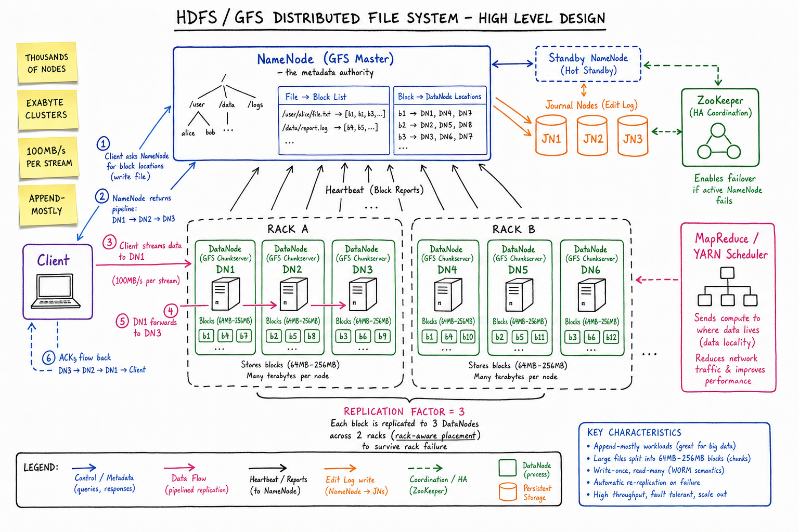
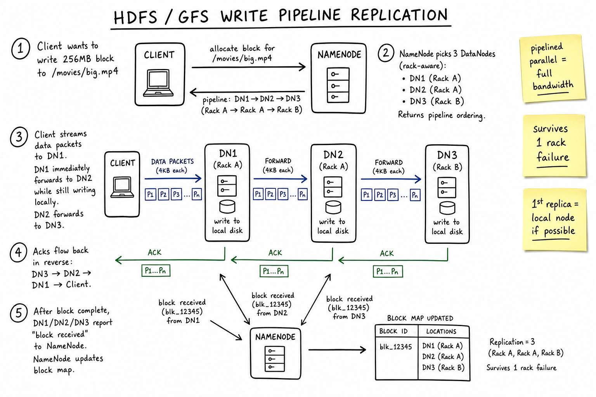
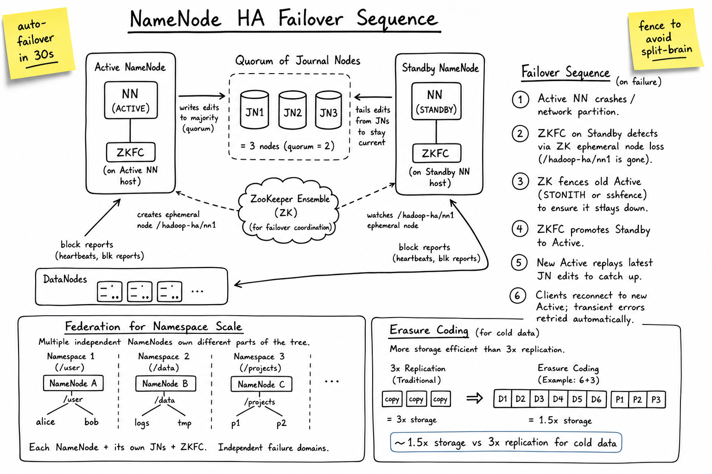

Distributed File System // HLD
HDFS / GFS pattern: one logical NameNode/Master owns all metadata; thousands of DataNodes/chunkservers hold replicated 64–256 MB blocks; write path is pipelined replication through 3 nodes across 2 racks; append-mostly workload; MapReduce schedules compute next to data.

Whiteboard HLD: NameNode (GFS master) holds the filesystem tree, file→block list, block→DataNode locations. DataNodes (chunkservers) store 64–256 MB blocks; heartbeat + block reports flow to NameNode. Replication factor 3, rack-aware (2 racks → survives whole-rack failure). Standby NameNode + Journal Nodes + ZooKeeper for HA. MapReduce/YARN scheduler sends compute to where data lives (locality).
01 — Requirements
Functional
- POSIX-ish file API: create, open, read, write (append), delete, mkdir, ls, rename
- Store huge files (GB–TB) split across commodity machines
- Replicate blocks for durability
- Heartbeat / block-report so master knows DataNode health
- Schedule MapReduce compute next to data (data locality)
- Tolerate frequent node failures (commodity hardware assumption)
Non-Functional
- High throughput for large sequential reads (batch analytics workload)
- Append-mostly — not optimized for small random writes
- Durability: tolerate disk + node + rack failure
- Scale to thousands of nodes / exabyte clusters
- Master metadata in memory — bounded by NameNode RAM
- High availability for the master via standby + journal
01a — Core Entities
| Entity | Key Fields | Notes |
|---|---|---|
| File | path, owner, permissions, replication_factor, block_size, blocks[] | Lives only in NameNode RAM (and edit log on disk). |
| Directory | path, owner, children[] | Tree; same store as files. |
| Block / Chunk | block_id, size (≤ 256 MB), checksum, locations[3] | The unit of storage and replication. |
| DataNode / Chunkserver | node_id, rack_id, host, blocks_stored[], capacity, last_heartbeat | Stores blocks on local disk; reports state to NameNode every few seconds. |
| NameNode / Master | fs tree + file→blocks + block→locations | Single logical instance per namespace; metadata in RAM. |
| Edit Log | append-only journal of metadata mutations | Persisted to Journal Nodes (quorum); tailed by Standby NameNode. |
| Block Pool | per-namespace block id space + DataNode storage | Federation isolates pools across multiple NameNodes. |
| Heartbeat | DataNode → NameNode every ~3s | If missing for 10 min, node declared dead; blocks re-replicated. |
| Block Report | DataNode → NameNode every ~1h: full list of blocks held | Detects silent loss; expensive but periodic. |
01b — API Design
Client → NameNode (metadata)
create(path, permissions, replication, blocksize) -> handle addBlock(file, prev_block) -> block_id, locations[3] complete(file) -> ok getBlockLocations(path, offset, length) -> [block_id, locations[3]] delete(path, recursive) rename(src, dst) mkdirs(path, permissions) listStatus(path) -> [FileStatus]
Client <-> DataNode (data)
writeBlock(block_id, data_pipeline) # streaming, packetized readBlock(block_id, offset, length) -> bytes
DataNode → NameNode (state)
registerDataNode() -> storage_id heartbeat() every ~3s -> commands (delete, replicate) blockReport() every ~1h -> full block inventory blockReceived(block_id) on successful write
The non-obvious contract: clients talk to NameNode only for metadata; all bulk data flows DataNode-to-DataNode and DataNode-to-Client. NameNode is never on the data path → it would die.
02 — Estimation
Cluster size: thousands of DataNodes, exabytes total
Block size: 128 MB default (HDFS), 64 MB original GFS
Avg file size: ~250 MB (big-data workloads); some up to TB
Files per cluster: ~100M-1B
Blocks per cluster: ~1B blocks (with replication factor 3 -> 3B block replicas)
NameNode RAM: ~150 bytes per file/block of metadata
100M files + 100M blocks ~= 30 GB RAM in NameNode
Hard ceiling -> federate above this
DataNode bandwidth: 100 MB/s per stream, 10 GbE per node
Cluster throughput: thousands of nodes * 1 GB/s = TB/s aggregate read
Heartbeat traffic: 1000 DNs * 1/3s * 1 KB = ~333 KB/s -- trivial03 — Why It's Hard
- One master holds all metadata — bounded by RAM; if it dies, the filesystem is unavailable
- Failure is the norm — commodity hardware at thousands of nodes means daily disk/node deaths
- Re-replication must self-heal — missing blocks detected, copies dispatched, all without ops involvement
- Rack-aware placement — surviving rack failure requires placing replicas across racks, but cross-rack write bandwidth is precious
- Append-mostly vs random writes — the entire design assumes large sequential writes; random write hurts
- Master failover without losing the world — HA standby + quorum journal + ZK fencing
- Tiny files problem — 100M small files crush NameNode metadata; the workload doesn't fit the design
04 — Architecture
Client
|
| (1) metadata ops
v
+------------------+ +----------------+
| NameNode |--> | Standby NN |
| (master) |<-- tail edits via JNs |
| fs tree | +----------------+
| file -> blocks | ^
| block -> DNs | |
+------------------+ +-----+-----+ +----+
^ | JN1 | JN2 | JN3 | (quorum journal)
| heartbeat +-----+-----+ +----+
| block report
| +---------+
+-----------------+ +-----------------+ | ZK | fencing,
| DataNode 1 | | DataNode 2 | | quorum | ephemerals
| (rack A) | | (rack A) | +---------+
| block1, block5 | | block1, block6 |
+-----------------+ +-----------------+
+-----------------+ +-----------------+
| DataNode 3 | | DataNode 4 |
| (rack B) | | (rack B) |
| block1, ... | | block5, ... |
+-----------------+ +-----------------+
^
| (2) data flow pipelined replication
Client <-> DataNode for read/write streams (never via NameNode)
05 — NameNode / Master
What it holds (in RAM)
- Filesystem tree (inodes: paths, owners, perms)
file_id → [block_id…](file's block list, in order)block_id → [DataNode locations](rebuilt from block reports)- DataNode registry: alive set, last heartbeat, capacity
What it persists (to disk)
- fsimage: periodic snapshot of the in-memory tree
- edit log: append-only journal of every metadata mutation since last snapshot
- Block→DN mapping is not persisted — rebuilt from DN block reports on restart
Why one master?
- Strong consistency for metadata is easier with one master
- Trades availability for simplicity — mitigated by Standby NameNode + Journal quorum
- Scales by sharding the namespace (Federation) not by scaling a single master horizontally
The metadata-in-RAM design is why HDFS hates small files. 100M tiny files = 100M inode + 100M block entries = ~30 GB RAM in NameNode. Compactly stored bulk data is what HDFS loves.
06 — Blocks & Replication
Why huge blocks?
- Amortize seek cost: 256 MB read at 100 MB/s = 2.5s; seek is ~10 ms → <1% overhead
- Less metadata: 1 GB file = 4 blocks (256 MB) vs 250K blocks (4 KB). Smaller NameNode RAM.
- Streaming throughput wins over per-block latency — analytics workload
Replication factor 3, rack-aware placement
Default placement for a new block: Replica 1: writer's own DataNode if it is one; else random on writer's rack Replica 2: random DataNode on a different rack Replica 3: random DataNode on the same rack as Replica 2 Why 2 racks (not 3)? Most failure modes are node-local (disk, power); cross-rack bandwidth is precious Putting 2 of 3 replicas on the same rack gives intra-rack read speed Still survives a full rack going down (Replica 1 stays alive)
Re-replication on failure
- DataNode missing heartbeat for 10 min → declared dead
- All blocks it held drop to under-replicated state in NameNode
- NameNode schedules re-replication (pick a healthy node, ask another live replica to copy)
- Throttled so re-replication doesn't crush the cluster (configurable bandwidth cap)
07 — Write Pipeline

Zoom: client asks NameNode for a new block; NameNode returns 3 rack-aware DataNodes in pipeline order. Client streams packets to DN1; DN1 forwards to DN2 while still writing locally; DN2 forwards to DN3. Acks flow back in reverse. On block complete, all 3 DNs report to NameNode.
addBlock(file, prev). NameNode picks 3 DataNodes (rack-aware), returns ordered pipeline DN1 → DN2 → DN3.blockReceived(block_id) to NameNode. NameNode marks block as fully replicated.Pipelined replication = full bandwidth. Each DN reads incoming packets and sends outgoing packets simultaneously. Total write throughput is the client→DN1 bandwidth, not divided by 3.
08 — Read Path
- Client → NameNode
getBlockLocations(path, offset, length); gets list of blocks with their DataNodes ordered by network distance (closest first) - Client opens TCP to nearest DataNode, streams the block
- If DN fails or returns bad checksum → try next DN in the list (transparent retry)
- Move to next block; repeat
Checksums everywhere
- Every block has a checksum file alongside it; verified on read
- On corruption, client tries next replica; NameNode is informed; corrupted replica gc'd, re-replicate
Short-circuit reads
- If the client lives on the same node as a replica (MapReduce data locality), it can read the block directly from local disk via Unix domain socket, bypassing TCP. Massive speedup.
09 — HA & Failover

Zoom: Active NN writes edits to majority of Journal Nodes; Standby NN tails them. On failure, ZKFC + ZooKeeper coordinate fencing (STONITH / sshfence) of the old Active, then promote Standby. Federation horizontally partitions the namespace.
Auto-failover in ~30 seconds is the production target. Fencing is the critical bit — without it, the old "Active" might come back and accept writes too.
10 — Federation & Erasure Coding
Federation (Hadoop 2+)
- Multiple independent NameNodes, each owning a piece of the namespace (
/user,/data,/projects…) - DataNodes serve all NameNodes; each NN has its own block pool ID space
- Lets you scale beyond a single NN's RAM budget
- Drawback: cross-namespace ops (rename across NSes) are not atomic
Erasure coding (Hadoop 3)
Traditional 3x replication: cold data:
1 block -> 3 copies = 3x storage Reed-Solomon 6+3 = 1.5x storage
Survives 3 simultaneous losses
BUT: read cost is higher (must reconstruct
on missing replica), write cost is higher
- Used for cold data (rarely accessed) to save storage cost
- Hot data stays on 3× replication for read speed
- Common scheme: RS(6,3) means 6 data + 3 parity chunks; 6 of 9 needed to reconstruct
11 — Data Locality (MapReduce / YARN)
HDFS exists primarily to feed batch compute. The scheduler tries to run each map task on a node that already holds the input block.
Locality tiers
- Node-local (best): task runs on the DataNode holding the block → local-disk read
- Rack-local: task runs on a node in the same rack → intra-rack network read
- Off-rack (worst): task runs anywhere; block streamed across racks
How the scheduler does it
- Map task requests a container; scheduler queries block→locations from NameNode
- Tries to allocate on a node-local slot first; falls back to rack-local; finally off-rack after a short wait
- Delay scheduler: wait a few seconds for a node-local slot to free up before degrading
Data locality is why HDFS makes sense for big-data analytics. Move compute, not data — saves cross-rack bandwidth and uses local disk throughput. S3-style object storage trades this for elasticity.
12 — Scaling
- NameNode RAM is the ceiling — ~150 bytes/object → 100M files + 100M blocks ~ 30 GB
- Federation partitions the namespace across multiple NameNodes → horizontal metadata scaling
- DataNode count scales naturally — add nodes, NN starts placing blocks on them
- Block size: bump from 128 MB → 256 MB or 1 GB for bigger-file workloads — fewer blocks, smaller NN footprint
- Heartbeat / block-report scaling: stagger block reports; tune intervals; partial reports
- Erasure coding for cold tiers cuts storage cost in half without scaling node count
- Tiered storage: SSD for hot blocks, HDD for cold; NN aware of medium per replica
13 — Edge Cases
- DataNode silent disk corruption → detected on read via checksum; corrupted replica removed; re-replicated from healthy copies
- NameNode out of memory (small-files attack) → cluster degraded; consider HAR archives or HDFS-on-S3 layer
- Rack power loss → replica 1 survives; NN re-replicates the missing copies; cluster operates degraded
- Network partition between NN and a DN → DN declared dead after 10 min; if it returns, blocks re-validated, extras gc'd
- Concurrent writers to same file → HDFS has single-writer semantics; second open is rejected
- Failed pipeline mid-block → client rebuilds pipeline excluding the failed DN, continues from last ack; NN replaces the missing replica later
- JN quorum loss → NameNode can't write edits; namespace becomes read-only; ops must restore quorum
- Split-brain NN → fencing (STONITH/sshfence) before promoting Standby; if fencing fails, refuse promotion
- Tiny-files workload → NameNode metrics show high inode/block count; archive into HAR or migrate to object storage
14 — Real-World Equivalents
| System | Notes |
|---|---|
| GFS (Google) | The 2003 paper that started it all. Single master, chunkservers, 64 MB chunks, append-mostly. Influenced HDFS heavily. |
| HDFS (Hadoop) | Open-source GFS. NameNode + DataNodes; Hadoop 3 added erasure coding + multiple Standby NNs. |
| Colossus (Google) | GFS successor: federated metadata, much smaller block size (~MB), erasure-coded. Backs BigQuery, Bigtable. |
| S3 / GCS / Azure Blob | Object storage: flat key-value, no real "filesystem" semantics, eventual consistency historically, much more scalable. Trades data locality for elasticity. |
| Ceph / GlusterFS | Distributed file systems with POSIX semantics; different metadata models (CRUSH for Ceph). |
| Apache Ozone | Object-store-style namespace on top of HDFS DataNodes; addresses small-files NN bottleneck. |